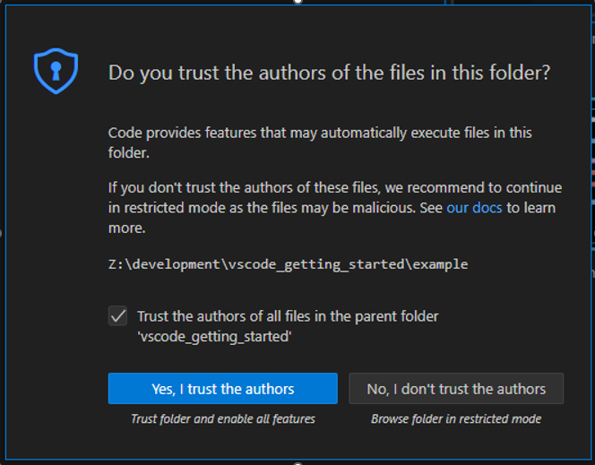
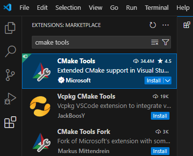
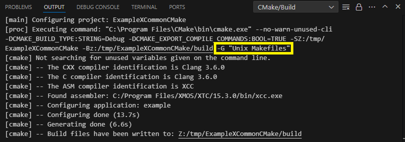
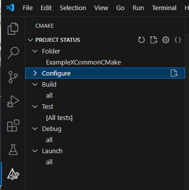
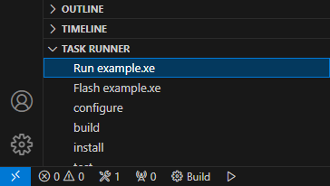
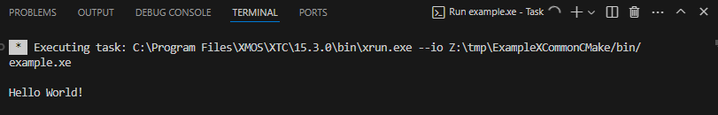

The following section shows how to build a simple XCommon CMake based example program in VS Code.
XCommon CMake is the build and dependency management system delivered with the XTC Tools and is required
to build certain XMOS applications.
While following the steps below, some dialogs may pop up. For example the VS Code CMake Tools
extension may ask whether an XCommon CMake project should be
re-configured each time VS Code is started.
Certain dialogs may be ignored and they will disappear after a few seconds.
Depending on the responses provided these dialogs may pop up again later
- for example when a workspace is opened in VS Code a second time.
Change directory to the copied ExampleXCommonCMake directory
In the command prompt type
$code.
Note the . character which tells VS Code to use the current directory as a workspace
Note: If VS Code restarts (for example after a machine reboot) it may not inherit the XTC Tools setup carried out above.
If this occurs, close VS Code, and go back to starting VS Code
VS Code may present a dialog box Do you trust the authors of the files in this folder. Check the box
Trust the authors of all files in the parent folder … and press the button Yes, I trust the authors

Ensure all instances of VSCode are closed in the Dock - this is required to ensure that when it is opened in the steps
below it inherits the XTC Tools environment
Use a shell in which the XTC Tools have been setup for command line usage
Change directory to the copied ExampleXCommonCMake directory
Type
$open/Applications/Visual\ Studio\ Code.app
Note 1: VS Code may open a workspace directory which had been used in a previous session. If this occurs, close the workspace directory with
File => Close Folder and open the copied ExampleXCommonCMake directory with File => Open Folder…
Note 2: If VS Code restarts (for example after a machine reboot) it may not inherit the XTC Tools setup carried out above.
If this occurs, close VS Code, and go back to starting VS Code
VS Code may present a dialog box Do you trust the authors of the files in this folder. Check the box
Trust the authors of all files in the parent folder … and press the button Yes, I trust the authors
Use a shell in which the XTC Tools have been setup for command line usage
Change directory to the copied ExampleXCommonCMake directory
In the command prompt type
$code.
Note the . character which tells VS Code to use the current directory as a workspace
Note: If VS Code restarts (for example after a machine reboot) it may not inherit the XTC Tools setup carried out above.
If this occurs, close VS Code, and go back to starting VS Code
VS Code may present a dialog box Do you trust the authors of the files in this folder. Check the box
Trust the authors of all files in the parent folder … and press the button Yes, I trust the authors
VS Code can be be extended by installing Extensions from the Marketplace. Extensions are provided by
Microsoft and by third parties. Both Microsoft and third party extensions are used to use the XTC Tools with VS Code.
In the copied example directory ensure there is a subdirectory called .vscode and it has a file settings.json,
which contains
{"cmake.generator":"Unix Makefiles"}
Note 1: All XCommon CMake based projects require a .vscode subdirectory with a file settings.json, with the above content
Note 2: VS Code may write additional lines into this file. It may be necessary to delete these lines, particularly if the .vscode
directory is copied into a new workspace
Note 3: The file explorer or command line tools on some systems may default to hide directories which start
with a . character. There is normally a way to make these directories visible
Select the Extensions icon on the left-hand Activity bar as shown below

Type cmaketools into the Search Extensions in Marketplace edit box
From the list of extensions presented, selected CMake Tools provided by Microsoft
Press the Install button in this extension
If a pop-up prompt appears over the VS Code top-centre search box with a list box titled: Select a Kit for ….
Click on the [unspecified] option in this list box
Select the Extensions icon on the left-hand Activity bar
Type TaskRunner into the Search Extensions in Marketplace edit box
Select the extension Task Runner by Sana Ajani and press the Install button
VS Code is now set up for use with the XTC Tools. The Setup
instructions above should not need to be repeated each time VS Code is started using the steps under
starting VS Code
An XCommon CMake project must be configured before it can be built. This will generate subdirectories which are
used in the subsequent build phase.
The Configure step may be performed automatically by VS Code at this point and the OUTPUT window in the Panel
will show

If this configure step has not been done, it may be launched by selecting the CMake icon in the Activity bar
and clicking on the page icon to the right of the Configure pull-down

Ensure the OUTPUT Window shows the -GUnixMakefiles option to cmake as shown in the figure above.
And that the compiler identification reports: TheCXXcompileridentificationisClang3.6.0. This is
the underlying compiler tool used by the XTC Tools
Note: If a Configure step is made a second time, reduced text is shown in the OUTPUT Window. The line
with -GUnixMakefiles will be shown, but subsequent lines will not. To perform a full “Configure”,
delete the generated build directory from the top level of the project and repeat the Configure step
Wait for the Configuring project: … progress message in the bottom Status bar to disappear.
A message of the form [cmake]--Buildfileshavebeenwrittento:... will be shown in the OUTPUT Window
A build directory will be created in the workspace directory containing the required files for the
subsequent build step
Note: This build directory may need to be deleted manually if the workspace directory is copied or moved,
and the Configure step repeated
Select the Explorer icon on the left-hand Activity bar
Expand the TASK RUNNER drop-down at the bottom of the Primary Side Bar
Select Run example.xe

The output from the run is shown in the TERMINAL window in the Panel.
The text HelloWorld! will be shown and the LEDs will flash.
This program will run until it is terminated by the user.

If the task runs forever
(typically when xrun is launched with –io, and the target program never terminates),
a spinning symbol will be shown next to the running task info button.
It may be terminated by pressing Ctrl-C in the TERMINAL window or by terminating the TERMINAL
in which it is running by clicking on the trash-can icon to the right of the task info button.
Note: On some systems, when using the trash-can icon, the LEDs may continue to flash due to the way
VS Code terminates the xrun process